Lab 3: Time of Flight Sensors
Goal: Equip the robot with distance sensors, speedier sampling for faster driving.
Prelab
There will be two Time-of-Flight (ToF) sensors. Since we cannot address the two sensors individually, I decided to change the address programmatically when the board is powered. This way, I won't get any latency in my readings by continuously enabling and disabling the sensors.
I am planning on placing one ToF sensor at the front of the car, and the other will go on the side. This way, I can detect obstacles in front of my car, as well as any walls to the side. Since I won't have a sensor on the back, the robot won't detect any obstacles if it drives backwards. I also won't detect anything on the opposite side of the side ToF sensor.
Tasks
Task 1: Battery Connection
First, I get the JST Connector and battery, I separate the wires and cut them one at a time, then, I solder the battery wires to the JST jumper wires. With heat shrink, I insulate any exposed wire.
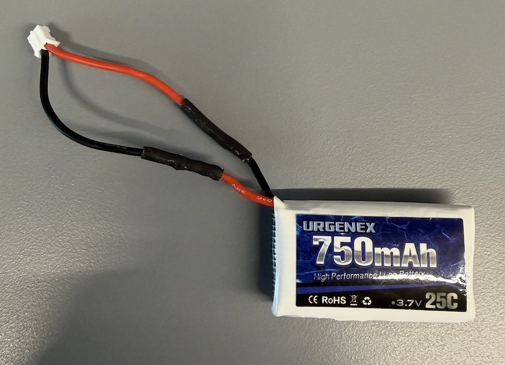
Finally, I power up the Artemis board with the battery and no connection to my laptop. Then, I verified that I could communicate with the board with the PING command.
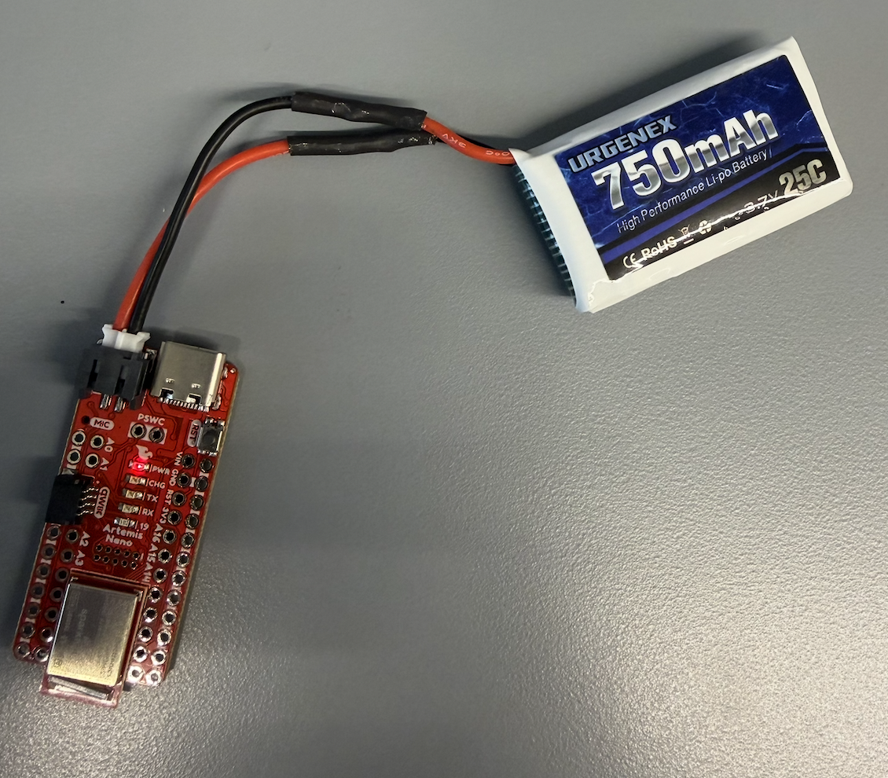
Task 2: Sensor Library Installation
Installed the SparkFun VL53L1X 4m Laser Distance Sensor library via the Arduino Library Manager.
Task 3: Breakout-Board & Artemis
Connected the QWIIC break-out board to the Artemis.
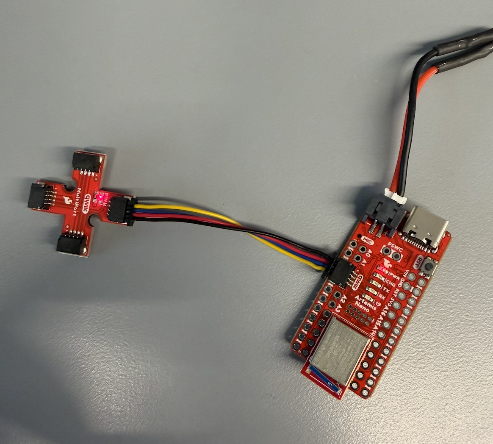
Task 4: First ToF Sensor
When connecting the ToF sensor to the QWIIC board, I decided to use one of the long cables. Per the manual, I needed to connect the yellow wire to SCL and blue wire to SDA.
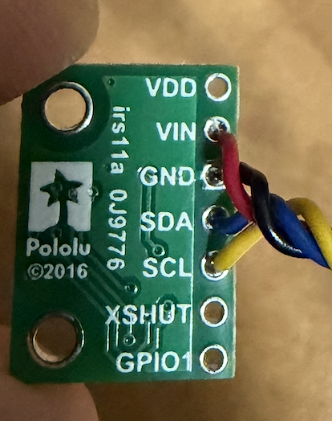
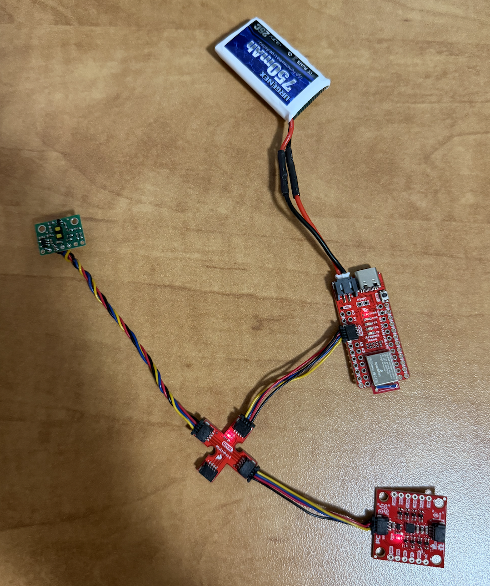
Task 5: Finding the Sensor
To find the sensor, I browsed the I2C channel using the Example05_wire_I2C file. After running the code, I get the following address/output:
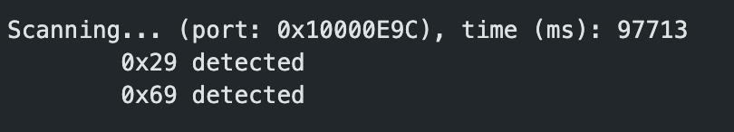
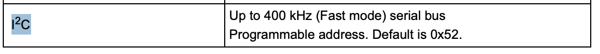
On the data sheet, the default address is 0x52. The data sheet lists the full 8-bit value, which includes a R/W bit at the very end. Since the ToF library handles the R/W bit automatically, we only use the 7-bit address, or 0x29.
0x52 = 0101 0010
0x29 = 010 1001
0x52 >> 1 = 0x29Task 6: ToF Modes
The ToF sensor has three ranging modes:
.setDistanceModeShort(); // 1.3 m
.setDistanceModeMedium(); // 3.0 m
.setDistanceModeLong(); // 4.0 m, defaultShort mode would be very reliable for objects close to the robot and would be least affected by lighting conditions. Medium is a middle ground that is more affected by light but captures further objects. Long mode provides the maximum range but is most affected by ambient light. I chose Long mode since classroom lighting shouldn't significantly affect readings.
Task 7: Testing ToF Mode
To test the ToF sensor, I made the following setup. Due to space constraints, I tested the short mode.
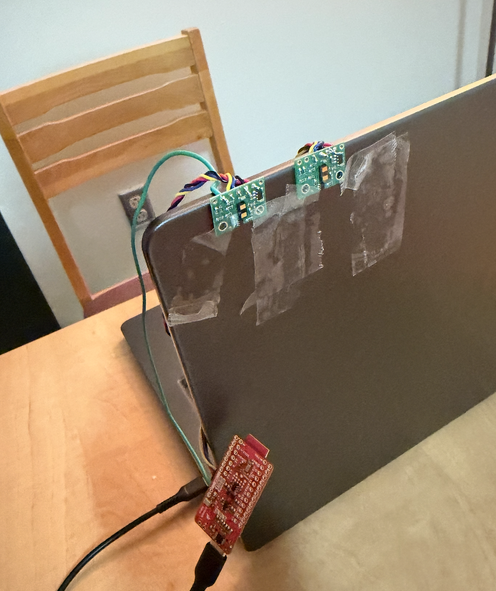
And ran ..\Arduino\libraries\SparkFun_VL53L1X_4m_Laser_Distance_Sensor\examples\Example1_ReadDistance
Range Test
Since I am testing with the short mode, the max range is 51 inches. As we can see in the graph below, sensor 1 was able to reach ~48 inches. I was moving a box farther away from the sensors, which is why sensor 2 probably started catching a different reading.
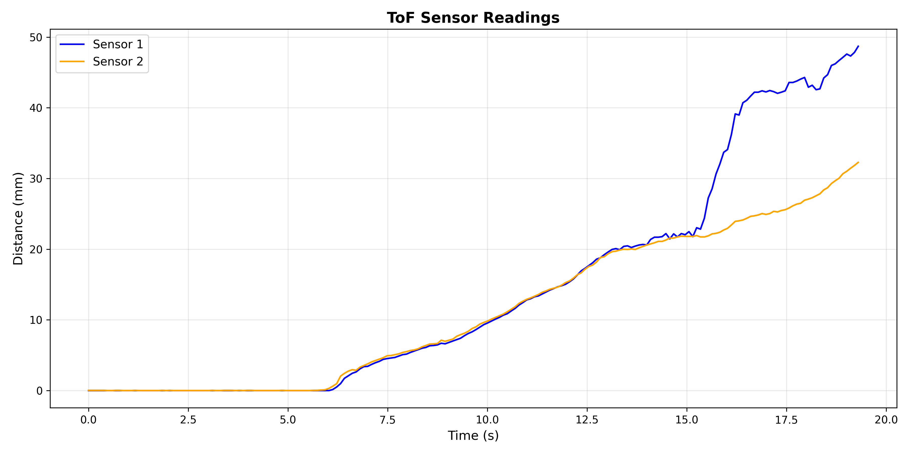
Repeatability
As we can see, the readings from the sensors were very close and stayed consistent for the time duration.
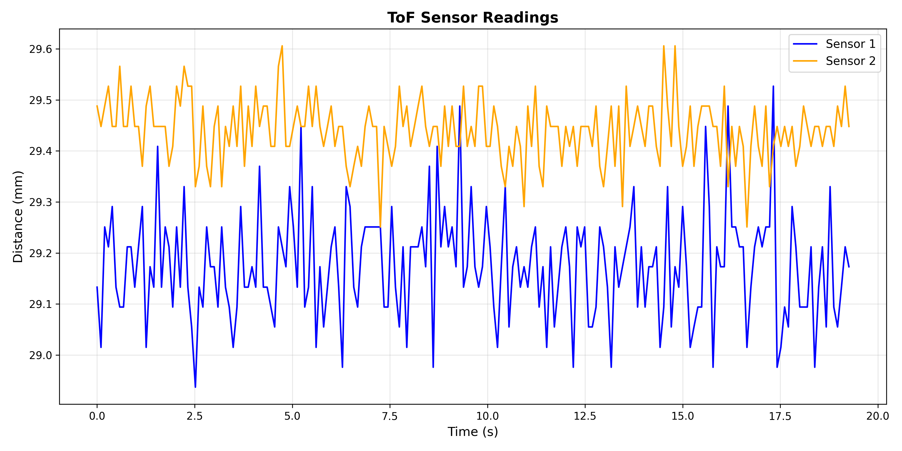
Task 8: Both ToF Sensors
In order to work with two ToF sensors, I need to be able to address them separately. Since the ToF sensors share the same default address, I chose to change one of the addresses programmatically at startup. I also connected pin A0 on the Artemis to the XSHUT pin. The setup and wiring diagram are below.
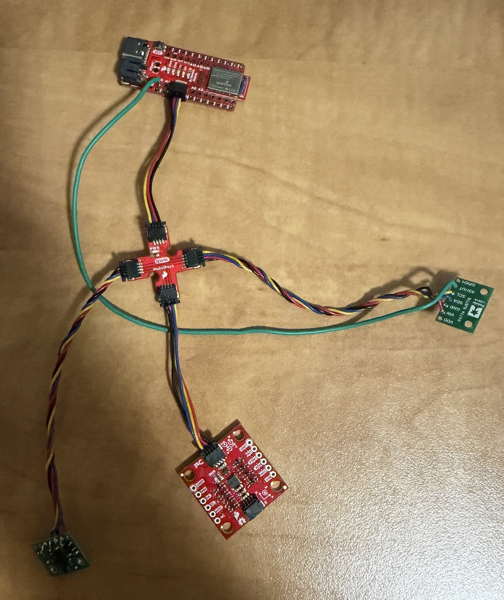
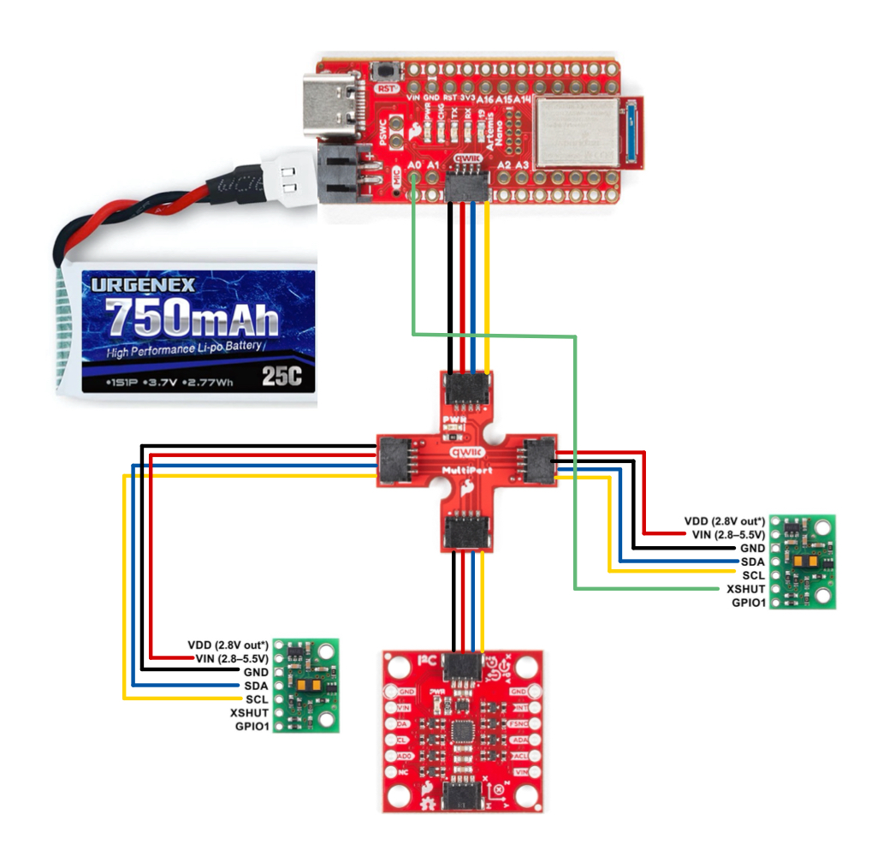
I added the code below to handle the address change.
pinMode(SHUTDOWN_PIN, OUTPUT);
digitalWrite(SHUTDOWN_PIN, LOW);
delay(10);
tofSensor1.begin();
tofSensor1.setI2CAddress(0x30);
digitalWrite(SHUTDOWN_PIN, HIGH);
delay(10);
tofSensor2.begin();
tofSensor1.setDistanceModeShort();
tofSensor2.setDistanceModeShort();I also wrote a new command to visualize readings from both ToF sensors.
case GET_TOF_DATA: {
float distance1;
float distance2;
for (int i = 0; i < DATAPOINTS; i++) {
tofSensor1.startRanging();
tofSensor2.startRanging();
while (!tofSensor1.checkForDataReady()) {}
distance1 = tofSensor1.getDistance();
tofSensor1.clearInterrupt();
tofSensor1.stopRanging();
while (!tofSensor2.checkForDataReady()) {}
distance2 = tofSensor2.getDistance();
tofSensor2.clearInterrupt();
tofSensor2.stopRanging();
distance1 = distance1 * 0.0393701;
distance2 = distance2 * 0.0393701;
tof_one_arr[i] = distance1;
tof_two_arr[i] = distance2;
millis_arr[i] = millis();
}
/* Send data over bluetooth */
for (int j = 0; j < DATAPOINTS; j++) {
tx_estring_value.clear();
tx_estring_value.append(millis_arr[j]);
tx_estring_value.append(",");
tx_estring_value.append(tof_one_arr[j]);
tx_estring_value.append(",");
tx_estring_value.append(tof_two_arr[j]);
tx_characteristic_string.writeValue(tx_estring_value.c_str());
}
}
break;With all of the code above, I can now get readings from both ToF sensors!
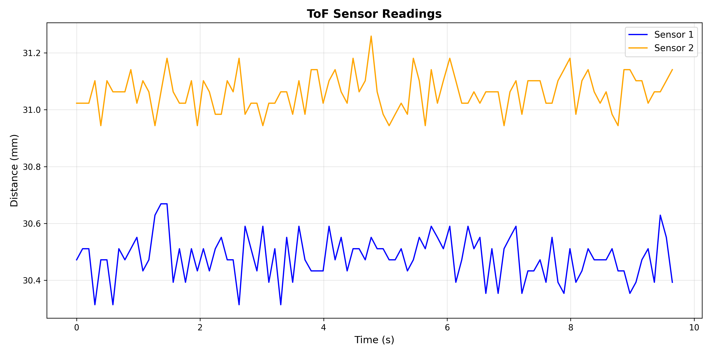
Task 9: Printing to the Serial
In future labs, code needs to run really quickly. For this task, I wrote a loop that only prints ToF data if it is available. I also print the timestamp every loop, so we can observe how often the ToF data is available.
void loop() {
int distance1;
int distance2;
float distance1Inches;
float distance2Inches;
tofSensor1.startRanging();
tofSensor2.startRanging();
if (tofSensor1.checkForDataReady()) {
int distance1 = tofSensor1.getDistance();
tofSensor1.clearInterrupt();
tofSensor1.stopRanging();
Serial.print("Distance 1: ");
Serial.print(distance1);
Serial.println(" ");
}
if (tofSensor2.checkForDataReady()) {
int distance2 = tofSensor2.getDistance();
tofSensor2.clearInterrupt();
tofSensor2.stopRanging();
Serial.print("Distance 2: ");
Serial.print(distance2);
Serial.println(" ");
}
Serial.print("T: ");
Serial.print(millis());
Serial.print(" ");
Serial.println();
}In the images below, we can observe the time between ToF1 and ToF2 readings.
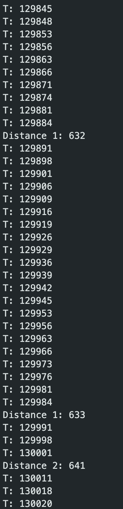
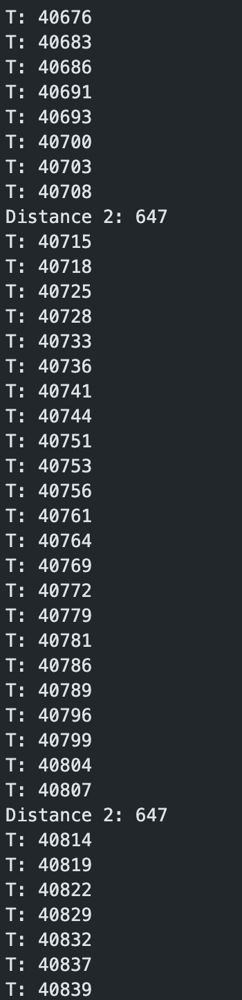
ToF1 captures data every ~93ms, while ToF2 captures data every ~92ms.
Task 10: Time Stamped Sensor Data
Finally, I edited previous lab code to send both IMU and ToF sensor data to my laptop over Bluetooth.
case SEND_IMU_AND_TOF_DATA: {
Serial.print("Sending IMU ");
Serial.print(imu_data_count);
Serial.print(" samples and TOF ");
Serial.print(tof_data_count);
Serial.println(" samples");
for (int j = 0; j < imu_data_count; j++) {
tx_estring_value.clear();
tx_estring_value.append("IMU,");
tx_estring_value.append(imu_millis_arr[j]);
tx_estring_value.append(",");
tx_estring_value.append(roll_accelerometer[j]);
tx_estring_value.append(",");
tx_estring_value.append(pitch_accelerometer[j]);
tx_estring_value.append(",");
tx_estring_value.append(lpf_roll_arr[j]);
tx_estring_value.append(",");
tx_estring_value.append(lpf_pitch_arr[j]);
tx_estring_value.append(",");
tx_estring_value.append(roll_gyro[j]);
tx_estring_value.append(",");
tx_estring_value.append(pitch_gyro[j]);
tx_estring_value.append(",");
tx_estring_value.append(yaw_gyro[j]);
tx_estring_value.append(",");
tx_estring_value.append(cf_roll_arr[j]);
tx_estring_value.append(",");
tx_estring_value.append(cf_pitch_arr[j]);
tx_characteristic_string.writeValue(tx_estring_value.c_str());
}
for (int j = 0; j < tof_data_count; j++) {
tx_estring_value.clear();
tx_estring_value.append("TOF,");
tx_estring_value.append(tof_millis_arr[j]);
tx_estring_value.append(",");
tx_estring_value.append(tof_one_arr[j]);
tx_estring_value.append(",");
tx_estring_value.append(tof_two_arr[j]);
tx_characteristic_string.writeValue(tx_estring_value.c_str());
}
break;
}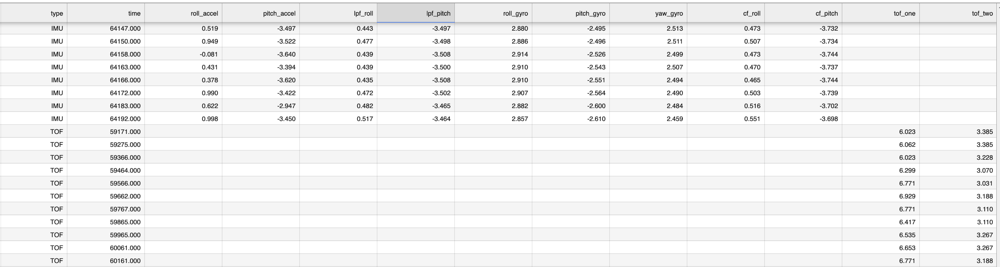
ToF and IMU
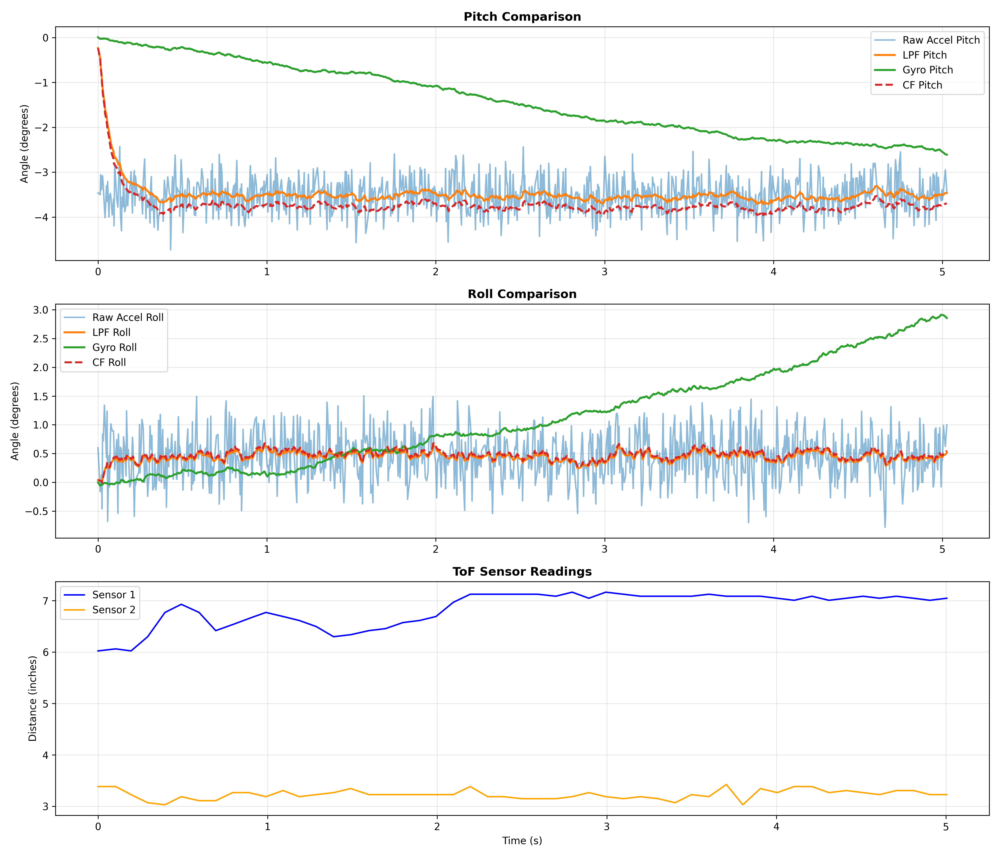
Overview
In this lab, I set up Time-of-Flight sensors, making sure I could get accurate readings from two separate sensors, and send them to the laptop over Bluetooth. At the start of the lab, I soldered the battery with a connector, and the QWIIC cables to the ToF sensors, which took a decent amount of time. I ran into problems when trying to connect to my Artemis board – my code would loop forever if the IMU was not connected, which didn't let me establish a connection to the board. The challenging part of the lab for me was soldering the wires, and writing the code to change the addresses.
References
I referenced Lucca Correia's page for help with programmatically changing the ToF address code, as well as Aidan Derocher's page for soldering the QWIIC wires to the ToF sensors correctly. I used Claude for help with graphing code as well as styling my website. Finally, I referenced the data sheets to get the default I2C address and other sensor information.